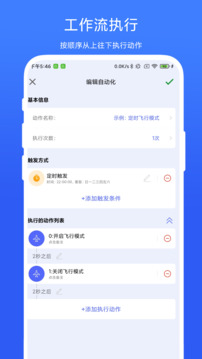

AutoAgent 你只用来开悬浮球？五个藏得真深的玩法
悬浮球只是门面。翻了三个月 AutoAgent，我把状态扳机、动作编排、权限沉默失败坑、设备换绑这些藏得深的玩法挖出来——看完你会发现这工具能用得比想象中聪明太多。
你以为 AutoAgent官网 上介绍的这个悬浮球快捷工具，就是用来划一下进应用、切个歌、开个手电的？这是大多数人对它的理解。我也是。直到把它翻了三个月，才发现这玩意儿藏的东西远不止一个悬浮球。
电量低于 20% 自动跳电池设置——状态扳机才是真自动
悬浮球的快捷手势是"人去找动作"——你得主动划一下才触发。但 AutoAgent 真正的杀招是让动作来找你，靠的就是状态扳机。
打开 AutoAgent，往设置里深翻，找到一个叫"状态触发"或者"条件扳机"的入口（不同版本名字可能略有差异），里面能看到一长串条件：电量阈值、Wi-Fi 连接状态、蓝牙开关、甚至网络类型切换。我设了一条规则：电量掉到 20% 以下时，自动跳转到电池设置页面。
一开始我以为这功能没生效——阈值设了好几天也没见弹提醒。后来才发现是权限没开。状态读取权限这个东西最迷惑人：系统不会报错，AutoAgent 也不会弹提示，只是条件永远不成立，任务永远不触发。把电量阈值临时调到当前电量之上，等一两分钟——如果权限开了，应该立即弹提醒。不弹就去应用设置里找"权限管理"，把"读取电量信息"和"读取网络状态"都打开。
悬浮球手势链——一个手势同时触发三件事
你可能给悬浮球绑过一个动作：左划开 Wi-Fi，右划关蓝牙。但谁下班回家只做一件事？关掉移动数据 + 开 Wi-Fi + 跳电池设置，这仨动作我每次回家都连着做。AutoAgent 的动作池编排就是干这个的。
在悬浮球的手势设置里，不只是选"一个动作"，还能选"一个动作池"——把三个动作串成一条链，手势一触发就依次执行。我把"左划"改成了：先关移动数据，延迟半秒开 Wi-Fi，再延迟一秒跳电池设置。通勤地铁上一划，到家刚好 Wi-Fi 连上。
这功能藏得真深——很多人以为悬浮球只能绑单个快捷方式，没往下翻那层"动作池"。

设置跳转 vs 直接控制开关——什么时候需要跳页面
AutoAgent 对 Wi-Fi、蓝牙这些常用开关，是能直接打开/关闭的，不一定需要跳转到设置页。那为什么autoagent文档里还有一套"设置跳转"的动作？
答案是：直接控制有 API 能力限制，跳转是万无一失的通用方式。比如我有个老版本的 AutoAgent，能关掉蓝牙但关不了定位——关定位这个 API 需要更高版本支持。这时候把"跳设置页"绑到手势上，手动点一下就能关掉。
我的经验是：能直接控制的就直接控制（快，不需要额外点击）；控制不了的就跳页面（稳，总能到）。两者结合用，别纠结哪种更"纯粹"。
微信绑定一个号绑一台——但换设备只需要一分钟
AutoAgent 的会员系统有个规则：一个微信账号只能绑定一台设备。我第一次换手机时慌了——VIP 刚续了半年，难道要重新付费？
不用。旧手机上打开 AutoAgent → 账号设置 → 解绑微信，然后新手机从下载拿到安装包装完 → 选"绑定微信" → 授权，整个过程大概一分钟，会员权益跟着微信走，不会丢。
这个设计其实挺合理的——它把会员和你的微信身份绑定，不是和某台物理设备绑定。手机坏了、丢了、刷机了，只要微信在，会员就在。卸载重装 App 也是同理，重新登录微信就行。
后台存活的组合拳——权限全开了还是不触发？
最后说个容易踩的坑。状态读取权限开了、自启动勾了、电池策略也设成"无限制"了——但电量掉下来还是没反应？
问题可能不在 AutoAgent 的设置里，而在系统的电池管理策略上。部分国产 ROM（MIUI、ColorOS、OneUI）会在你锁屏几分钟后把"不重要"的后台应用杀掉。AutoAgent 被系统杀了，状态变化它当然感应不到。
组合拳是：自启动 + 电池白名单 + 把 AutoAgent 加到"一键清理"的忽略列表。三项都做了，后台存活基本稳。别只开其中一项——单开自启动但电池策略还是"智能限制"，照样被杀。

收尾
AutoAgent 的核心价值从来不是那个悬浮球本身，而是把"状态扳机 + 动作编排 + 快捷入口"串起来的整套逻辑。悬浮球是门面，让你觉得它只是个手势工具；但真正把它用透，得翻到那些没有"推荐"标记、藏在设置深处的入口。
现在我通勤的那只手机上，AutoAgent 跑着三条规则：晚上十点自动跳省电模式设置、电量到 20% 弹电池设置、连上家里 Wi-Fi 自动关移动数据。全是状态扳机，没有一个需要我手动触发。这才是自动化该有的样子——你忘了它在跑，它却一直在帮你省麻烦。
别只用它的悬浮球，往深处翻——你会发现藏得真深的东西远不止这几个。这些整理好的功能说明和配置心得我也分别存了副本，怕一个仓库哪天访问不了——GitHub 为主，Gitee 方便国内朋友，GitCode 是额外备份。